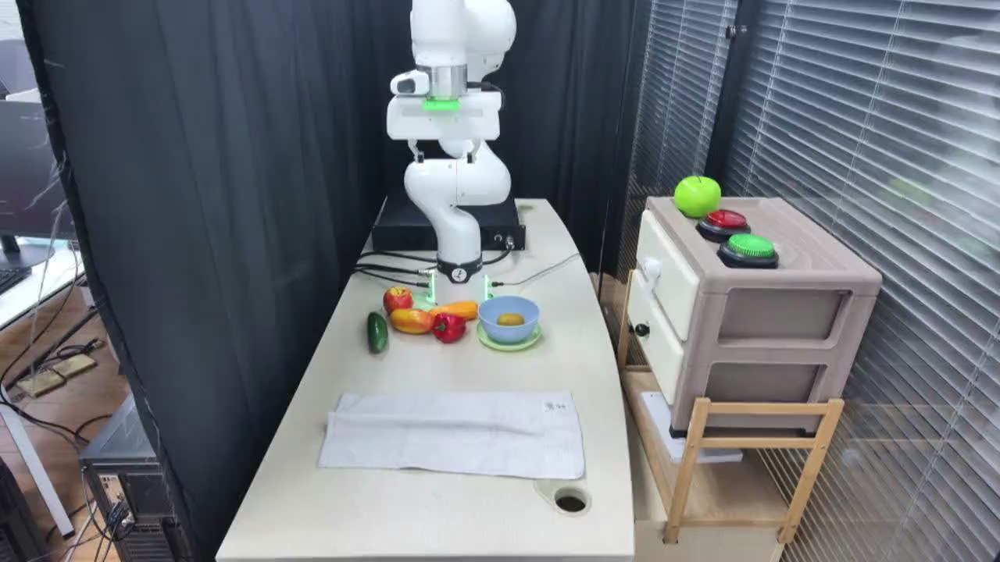

TAVP · 002_franka_fold_towel_standard_success
Franka fold towel standard success

Visual review action_review.json
{
"video_id": "002",
"review_method": "Visual inspection of every second decoded frame across the entire MP4 plus native-resolution transition frames, followed by native initial PNG",
"review_source_video": "/Users/nijiachen/Downloads/Robotvideo/TAVP/002_franka_fold_towel_standard_success/original/video.mp4",
"source_frame_count": 1396,
"source_fps": 30.0,
"inspected_frame_stride": 2,
"inspected_sampled_frame_count": 698,
"reviewed_contact_sheets": [
"sheet_001.jpg",
"sheet_002.jpg",
"sheet_003.jpg",
"sheet_004.jpg",
"sheet_005.jpg",
"sheet_006.jpg",
"sheet_007.jpg",
"sheet_008.jpg",
"sheet_009.jpg",
"sheet_010.jpg",
"sheet_011.jpg"
],
"native_detail_frames": [
450,
600,
720,
760,
800,
850,
930,
970,
1020,
1080,
1140,
1200,
1240,
1300,
1360,
1395
],
"initial_scene": "Fixed elevated oblique view of a pale rectangular tabletop with a white towel stretched left to right across its front half, slightly wrinkled and showing a raised horizontal strip. A white articulated robot arm stands at the back, its open parallel gripper raised above the table with a bright green marker on the wrist. Red, yellow-orange, and dark green produce-shaped objects sit near the base beside a light blue bowl on a green saucer, with a small yellow object in the bowl. A round cable opening is near the table's front-right corner. At the right is a beige two-drawer cabinet topped by a bright green apple-shaped object and red and green circular buttons, with a small wooden chair below. A dark partition is behind the arm and window blinds fill the right background.",
"observed_sequence": [
{
"start_frame": 0,
"end_frame_inclusive": 159,
"action": "The raised arm and open gripper pause above the rear portion of the table; the towel remains stretched across the front.",
"confidence": "high"
},
{
"start_frame": 160,
"end_frame_inclusive": 715,
"action": "The arm bends toward the left and forward, rotates its gripper downward, and slowly descends toward the towel's left edge.",
"confidence": "high"
},
{
"start_frame": 716,
"end_frame_inclusive": 935,
"action": "The gripper reaches the left edge near its middle, pinches the fabric, and pauses near table level. Small fabric shifts occur; the exact finger contact is partly hidden by the gripper body.",
"confidence": "medium"
},
{
"start_frame": 936,
"end_frame_inclusive": 1139,
"action": "The arm lifts the pinched left edge and moves it rightward in an arc. The towel drapes from the gripper, the left portion turns upward and across, and the towel slides slightly right on the tabletop.",
"confidence": "high"
},
{
"start_frame": 1140,
"end_frame_inclusive": 1203,
"action": "The arm reaches the towel's right side and lowers the held fabric over the remaining half, producing a smaller layered rectangle with a loose uneven top flap near the round table opening.",
"confidence": "high"
},
{
"start_frame": 1204,
"end_frame_inclusive": 1395,
"action": "The gripper pauses close to the folded towel's right edge, with the folded cloth resting on the table; near the final frames the wrist begins a small upward movement. No large retreat or second fold is shown.",
"confidence": "high"
}
],
"multi_step": false,
"selected_segment": {
"start_frame": 0,
"end_frame_exclusive": 1396,
"reason": "The entire clip depicts a single continuous towel fold, including approach, fabric grasp, lift across to the right, lowering, and final settling; there is no independent second subtask.",
"terminal_state": "The towel rests as a smaller layered rectangle on the right side of its original footprint, with uneven edges and a loose flap; the gripper remains close above its right edge and has begun a slight upward movement."
},
"full_sequence_prompt": "The robotic arm grasps the towel's left edge and folds the left half over the right half. Keep the camera fixed; preserve robot geometry, physically valid joint motion, and normal gripper opening and closing.",
"world_model_prompt": "The robotic arm grasps the towel's left edge and folds the left half over the right half. Keep the camera fixed; preserve robot geometry, physically valid joint motion, and normal gripper opening and closing.",
"uncertainties": [
"The gripper body partly hides the fingers at the initial pinch and final placement. The visible fold and final small wrist lift are clear, but a complete opening/release of the fabric cannot be confirmed."
],
"evidence_frame_indices": [
0,
600,
800,
970,
1080,
1200,
1395
],
"prompt_provenance": "visually_authored_from_video_and_initial_frame",
"selected_execution_status": "success",
"prompt_protocol": "concise_action_v1",
"review_source_original_video": "002_franka_fold_towel_standard_success/original/video.mp4",
"review_source_crop_rectangle": null
}